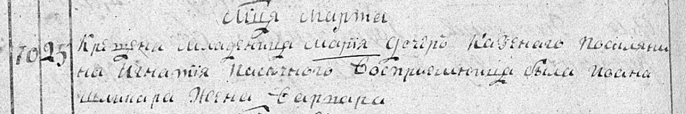
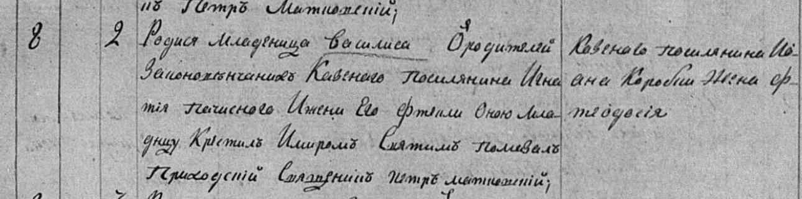
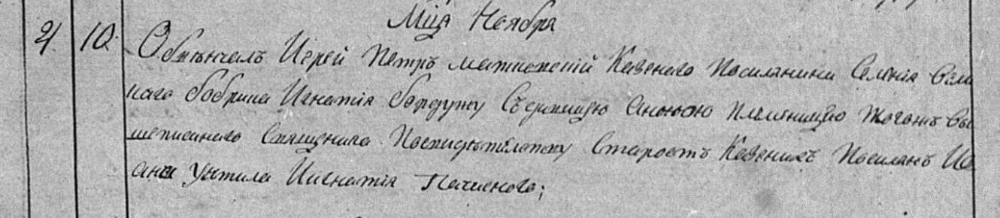
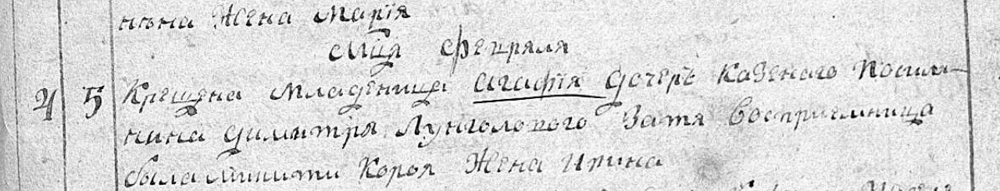

Новий запис про Марію, дочку Ігнатія Пачисного · перевірено 14 листопада 2026 року
Раніше за відому згадку 1804 року. Знайдено документ про носія родинного прізвища. Зв’язок із доведеним деревом ще не встановлений.
ПАЧЕСНІ У ГВОЗДАВЦІ: НОВИЙ ЗАПИС 1800 РОКУ Codex, перевірено 14 листопада 2026 року. ГОЛОВНИЙ РЕЗУЛЬТАТ 25 березня / 6 квітня 1800 року хрещена Марія, дочка Ігнатія Пачисного. Це найраніший наразі звірений у цій роботі запис про носія прізвища Пачесних у Гвоздавці; на сайті раніше було зазначено 1804 рік. Прямий родинний зв’язок усередині запису «Ігнатій → Марія» підтверджений. Зв’язок цих людей із доведеним деревом Ольги Пачесної ще не встановлений. До дерева як доведених предків їх не додаємо. ПЕРЕВІРКА НОВИЗНИ Звірено з текстовими матеріалами репозиторію opachesnaya-creator/rodovid на коміті 051559326d68f8522bbef2dbb3f23507219c6a21. Запис Марії 1800 року, згадку Ірини — дружини Ігнатія Короя 1800 року та Ігнатія Пачисного як весільного старости 1804 року в опублікованих матеріалах не знайдено. Василиса 1804 року вже відома і новою знахідкою не оголошується. Неопубліковані нотатки Claude ця перевірка не охоплює. ДАТИ ТА НОМЕРИ PDF-зображення рахуються від 1 у наведених файлах Commons. Це не номери кадрів FamilySearch. Окремо наведено рукописну фоліацію там, де вона однозначна. У січні–лютому 1800 року різниця календарів становила 11 днів, після юліанського 29 лютого — 12. Для дат 1804 року — 12 днів. Хрещення не підмінюється народженням, а згадка старости на чужому вінчанні — датою його власного шлюбу. Транскрипції — ручне читання фрагментів, із розкриттям частини скорочень; це не повна дипломатична публікація документа. Повні розвороти додані для перевірки.
Хрещення: 25.03.1800 ст. ст. / 06.04.1800 н. ст.

«Крещена младеница марія дочь Казеннаго Поселянина Игнатія Пачисного».
Прямо названі дитина Марія та її батько Ігнатій Пачисний, казенний поселянин. Матері в цьому записі немає. Хрещена — Варвара, дружина Івана; прізвище чоловіка читаю як Шапкар (читання потребує додаткової перевірки). 25 березня — дата хрещення за словом «Крещена», а не встановлена дата народження. Гвоздавка — місце церковного запису; точного місця народження дитини та походження батька не наведено.
Це на чотири роки раніше за найраніший запис про Пачесних, наведений на сайті на момент перевірки. Документ підтверджує присутність носія прізвища в гвоздавській парафії вже 1800 року. Він не встановлює спорідненість Ігнатія з Матвієм Андрійовичем або іншими доведеними предками користувачки.
Народження: 08.01.1804 ст. ст. / 20.01.1804 н. ст.

«Родила младеница Василиса … Казеннаго Поселянина Игнатія Пачисного и жены его Фтекли».
Цей запис уже був у Claude; він тут повторно візуально звірений для порівняння з Марією 1800 року. Батьки — Ігнатій Пачисний та Фтекла (нормалізоване ім’я Фекла/Текля). На відміну від книги 1800 року, тут прямо названа мати. Запис починається формулою народження; про хрещення сказано далі, без окремої дати.
Одна парафія, однакові ім’я та прізвище батька й інтервал у чотири роки дозволяють перевіряти версію, що Марія і Василиса — сестри по батькові. Але по батькові та вік Ігнатія не вказані, тому тотожність чоловіків ще не доведена. Фтеклу не можна автоматично записувати матір’ю Марії.
Вінчання, на якому згаданий Ігнатій: 10.11.1804 ст. ст. / 22.11.1804 н. ст.

«По свидетелству Старостъ Казенныхъ Поселянъ … Игнатія Пачисного».
Ігнатій названий у переліку весільних старост, які засвідчували вінчання. Це не його власний шлюб. По батькові, вік та дружина Ігнатія не зазначені. Прізвища наречених тут не використовую для родинного висновку.
Ще одна датована згадка Ігнатія Пачисного в парафії, придатна для пошуку його оточення. Збіг із батьком Марії та Василиси імовірний, але окремо не доведений.
Хрещення Софії, на якому Ірина — хрещена мати: 05.02.1800 ст. ст. / 16.02.1800 н. ст.

«Восприемница была Игнатія Короя жена Ирина».
У записі хрещення Софії прямо назване подружжя Ігнатій Корой та Ірина. Ірина — хрещена, а не рідна мати Софії. Її дівоче прізвище, вік і по батькові обох невідомі. Ця лютнева дата 1800 року переводиться додаванням 11 днів, а не 12.
Окреме подружжя для подальшого зіставлення з ревізіями та метриками Короїв. Зв’язок із Дмитром, Панкратієм, Сергієм або Йосипом Короєм не встановлено. Ігнатій Корой та Ігнатій Пачисний — різні записи з різними прізвищами, підстав їх об’єднувати немає.
ЩО ЗМІНЮЄТЬСЯ В РОДОВОДІ На сайті можна уточнити нижню межу згадок прізвища у Гвоздавці: щонайменше 1800 рік замість 1804. Це не дата переселення родини й не доказ, що всі Пачисні села належали до однієї сім’ї. Робоча група для зіставлення: Ігнатій — батько Марії (хрещення 1800); Ігнатій та Фтекла — батьки Василиси (народження 1804); Ігнатій — весільний староста (1804). Об’єднання трьох згадок залишається гіпотезою. Для Марії відомі ім’я, батько та дата хрещення. Дата народження, мати, шлюб, смерть і тривалість життя невідомі. Для Ігнатія невідомі по батькові, вік, дата народження, походження й дата смерті. Практичне продовження: шукати шлюб або смерть Марії приблизно від 1816 року, шлюб/смерть Ігнатія і Фтекли, а також ревізійний запис цієї сім’ї. Найціннішим буде документ, що назве по батькові Ігнатія або прямо пов’яже його з пізнішими Пачесними. ЩО ПЕРЕВІРЕНО ПО ДАДУЛАХ У ЦЬОМУ ПРОХОДІ 1800, ДАОО 37/3/76, Гандрабури, PDF 209–213: усі три частини, 39 хрещень/народжень, 3 шлюби, 59 смертей/поховань. Хрещення Дмитра, сина Федора Дадула, не впізнано. Подібні прізвища Годул і Радул не зараховані до Дадулів. 1801, ДАОО 37/3/80, Гандрабури, PDF 216–219 і підсумок 220 ліворуч: 39 народжених (21 хлопець, 18 дівчат), 8 шлюбів, 17 померлих (8 чоловічої, 9 жіночої статі). Надійної згадки Дмитра або потрібної сім’ї Дадулів не встановлено. Праворуч на 220 починаються Байтали. 1800, ДАОО 37/3/76, Гвоздавка, PDF 195–197 і підсумок 198: 32 народжених, 9 шлюбів, 11 померлих. Запис про Якова, дворічного сина Івана Дадула (2 березня, PDF 197, праворуч, № 3), уже відомий Claude. Нової смерті Марії — дружини Івана або його повторного шлюбу не впізнано. Під час цього перегляду знайдені Марія Пачисна та згадка Ірини Корой. 1801, ДАОО 37/3/80, Гвоздавка, PDF 203–205: 22 народжених, 8 шлюбів, 11 померлих — відповідає підсумку. Надійних нових записів Дадулів не впізнано. Видимі смерті закінчуються 2 квітня; за межі збереженої копії висновок не поширюється. 1809, ДАОО 37/3/130, Гандрабури, PDF 462–472: усі три частини, 57 народжених (27 хлопців, 30 дівчат), 16 шлюбів, 32 померлих (17 чоловічої, 15 жіночої статі), відповідно до підсумку. Нової надійної згадки Дадулів не впізнано. Зокрема, батько Марії у записі № 56 має інше прізвище; Дмитро Радул у частині про смерті — не Федір Дадул. Це візуальний пошук за прізвищами й родинними формулами, а не повна поіменна транскрипція. Негативний результат не доводить відсутності особи в інших копіях, парафіях або роках. Вік Дмитра 2 роки в похованні 1803-го міг бути приблизним, тому 1800–1801 роки не вичерпують пошуку його народження. ДЖЕРЕЛА 1800, ДАОО 37/3/76: https://uk.wikisource.org/wiki/Архів:ДАОО/37/3/76 Повний файл Commons: https://commons.wikimedia.org/w/index.php?curid=109992903 FamilySearch, цифрова група 005683447 (номер PDF не тотожний номеру кадру). 1801, ДАОО 37/3/80: https://uk.wikisource.org/wiki/Архів:ДАОО/37/3/80 Повний файл Commons: https://commons.wikimedia.org/w/index.php?curid=109993357 1804, ДАОО 37/3/101: https://uk.wikisource.org/wiki/Архів:ДАОО/37/3/101 Відомий запис Василиси на FamilySearch: https://www.familysearch.org/ark:/61903/3:1:3QSQ-G937-4C7T 1809, ДАОО 37/3/130: https://uk.wikisource.org/wiki/Архів:ДАОО/37/3/130 Попередня знахідка Дадулів: https://opachesnaya-creator.github.io/rodovid/research-dadul-1802-1803.html